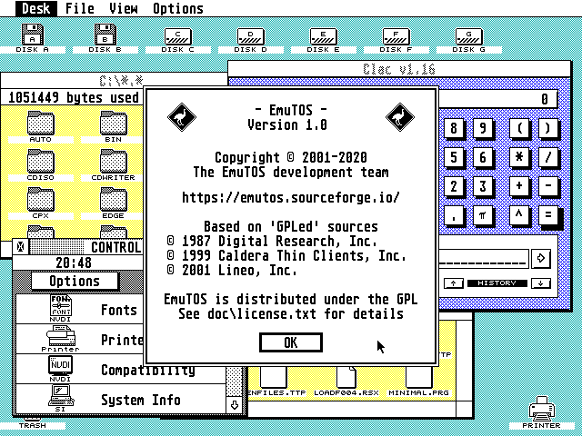
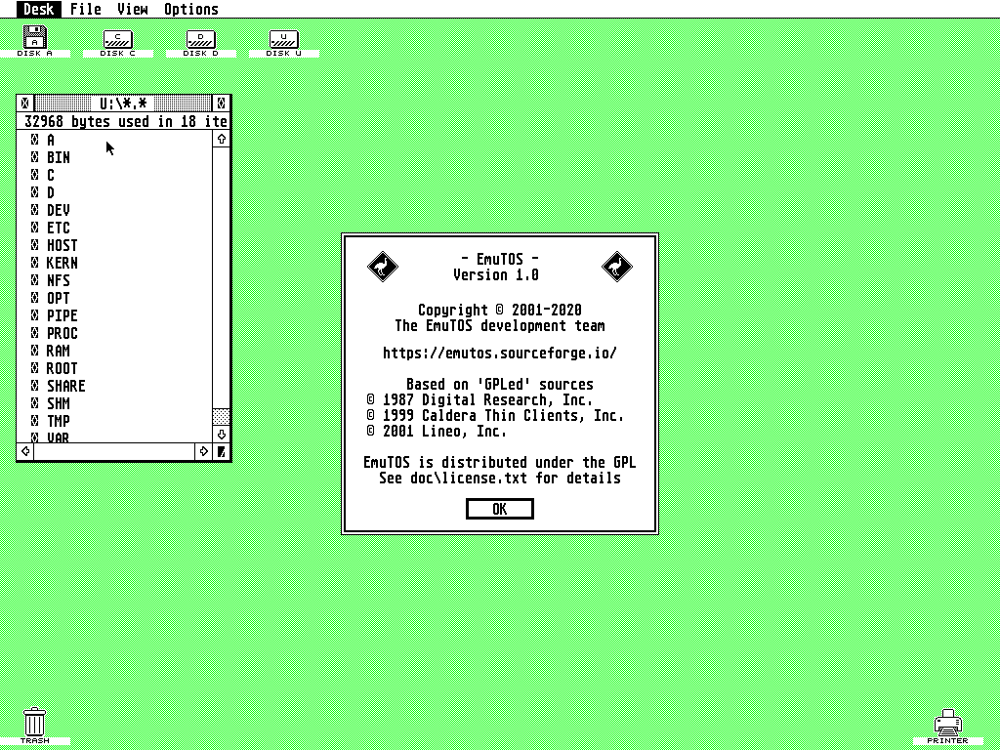

EmuTOS offers a graphical desktop with windowing, just like Atari TOS.
Most versions also provide a command-line interface, similar to that in
DOS. In our showcase you'll find screenshots showing you EmuTOS in
different situations. You also can see a preview of the included Icon and Cursorsets.
Screenshots
Click on a screenshot to enlarge it in a new window (or Tab).
This one is EmuTOS in full action on a TT medium-res desktop. EmuTOS is fully capable of running most TOS-compatible programs today.
If you don't like GEM and all the colour so much, you can easily switch to the embedded shell EmuCON and run some text applications.
You can play your old games with it. Like Rick Dangerous
or Crystal Castles (and many other games if you like).
View the latest demos.
Even some Falcon ones.
Inside EmuCON you can use terminal based applications like Petr Stehlik's Norton-like filemanager for example.
 And finally, if you find TOS too boring, you can easily boot into FreeMiNT. Here you can see the EmuTOS desktop running with FreeMiNT's GEMDOS, but you would normally want to use XaAES and TeraDesk as well for a fully modern system.
Desktop icons
The EmuTOS desktop has a builtin set of desktop icons that are
used by default; you can see them below. EmuTOS also supports
user-loadable icons, in a similar way to Atari TOS 2/3/4. The
distribution currently contains three sets of alternative icons,
also shown below; you can use them as-is, or modify them to create
your own set using a standard resource editor.
Default Icon Set
Alternate Icon Set 0
Alternate Icon Set 1
Alternate Icon Set 2
User-installable mouse cursors
Just like Atari TOS, EmuTOS uses a builtin set of eight mouse cursors,
as shown below. The ones you'll see most often are the pointer and the
hourglass (busy indicator). However, unlike Atari TOS, EmuTOS allows
you to easily change these by putting a specially-formatted file on the
root folder of the boot disk. So if, for example, you'd prefer a busy
bee as the busy indicator, you can easily do that! The distribution
currently contains two sets of alternative cursors, also shown below;
you can use them as-is, or modify them with the ORCS resource editor
to create your own set.


 made by
made by  with
with  by the EmuTOS development team
by the EmuTOS development team